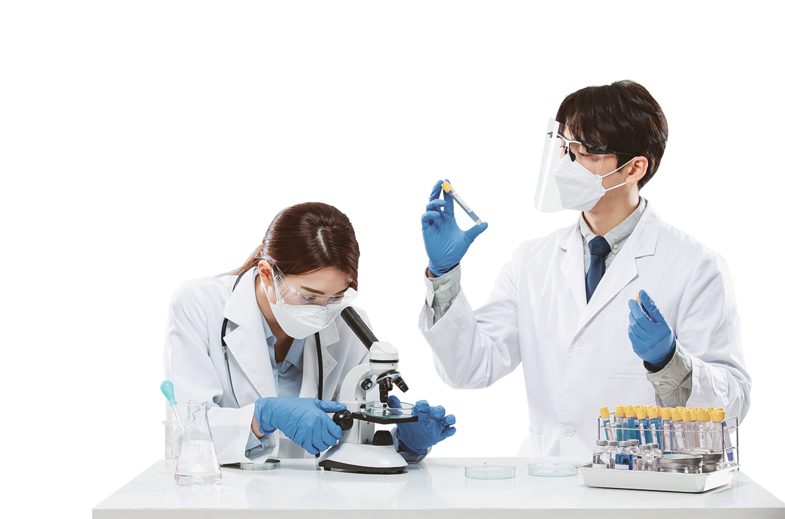

메인비주얼 영역
Food Culture Leader
LOTTE
R&D CENTER
1983년 '국민 건강에 이바지 한다'는 목표 아래 설립된 롯데중앙연구소는 국내 최고의 종합 식품 연구소로서,
높은 기술력으로 시장을 선도하고 있습니다. 식품으로 소비자의 삶을 풍요롭게 하는 것, 이것이 우리가 존재하는 이유입니다.
높은 기술력으로 시장을 선도하고 있습니다. 식품으로 소비자의 삶을 풍요롭게 하는 것, 이것이 우리가 존재하는 이유입니다.
FIELDS OF RESEARCH
유수의 전문가들로 구성된 연구진들이 다양한 분야에서 활약하고 있습니다.


ACHIVEMENTS
제품 개발을 비롯해 전 연구분야에 걸쳐 창의적 솔루션을 제시하고 있습니다. 끊임없는 노력으로 일궈낸 고도화된 연구 성과를 소개합니다.

PR CENTER
열린 마음으로 소비자와 소통하는 롯데중앙연구소의 새로운 소식을 만나보세요.
Scroll to Explore